Have you ever felt this? You flip to an old photo. You know the person in it, but you cannot recall where the background was shot. It is as if the person floated in from thin air.
That is a pity.
We often say the land shapes the people who live on it. How a person looks, what they wear, how they speak, how they walk, even the mood in their eyes, all tie to the place where they live. But when we shoot portraits, we often blur the background into mush, as if the whole world should look only at the face.
Environmental portraits do the opposite.
It does not rush to the face. It first places the person in the scene where they truly live, then steps back two paces to show you what place made this person who they are.
Does it sound abstract? Break it down, and it comes to four points.
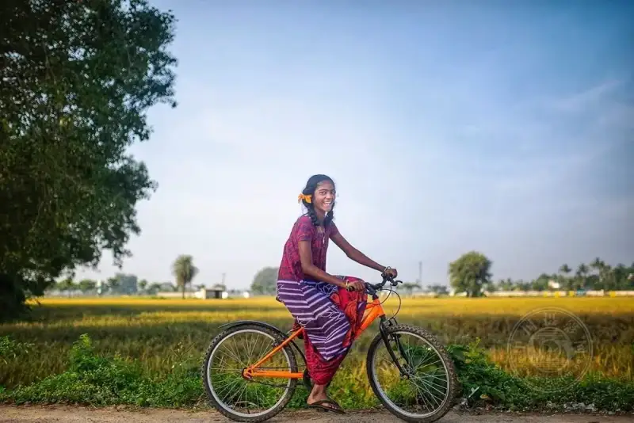
©Akilan Thyagarajan
First, you must shoot this specific person.
Do not smile. This is not a trivial point.
The person in an environmental portrait is alive and has a back story. They are not just a pretty passer-by. They are a specific person shaped by sun, wind, sand, wet, or dry.
For example, you shoot a fisherman by the sea. The roughness of his skin, the habit of squinting, the calluses on his hands, all were drawn there little by little by the sea wind and the sun. If you cannot catch these, the shot is no different from a lit, posed model in a studio.
So the first step is to look closely at the person before you. What makes them different? What traces has the environment left on them? When you see these clearly, the shutter has meaning.
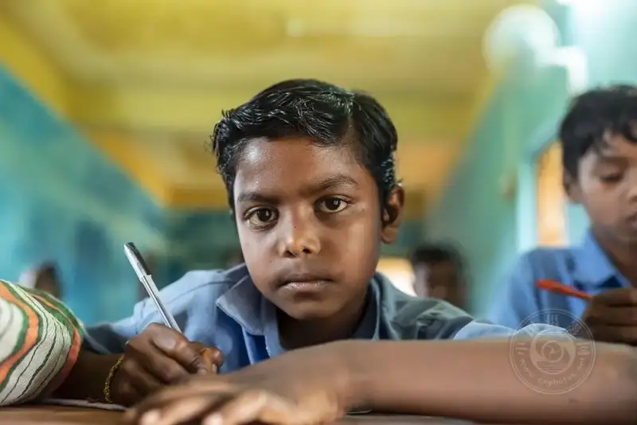
©Akilan Thyagarajan
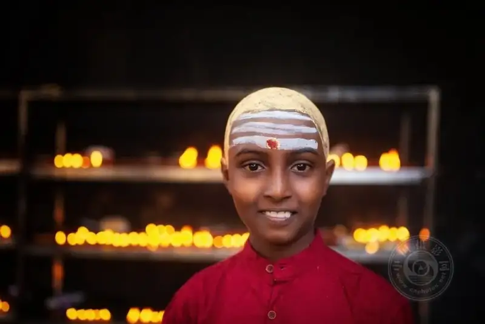
©Akilan Thyagarajan
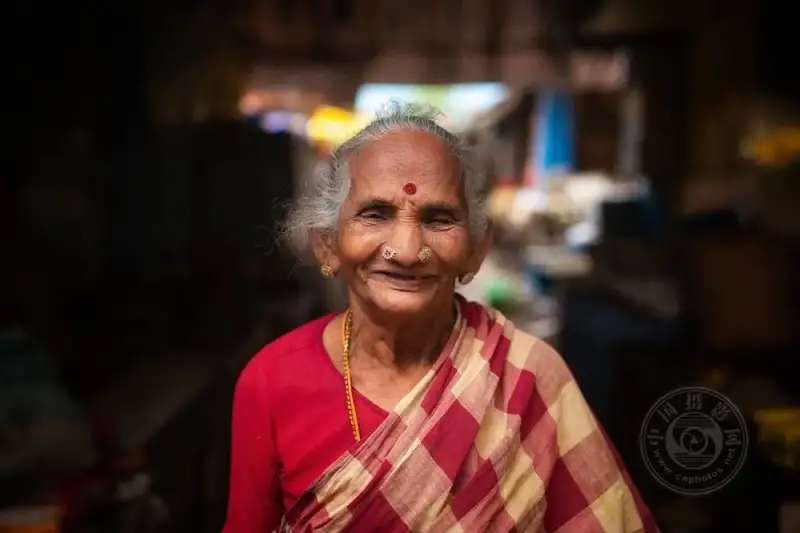
©Akilan Thyagarajan
Second, shoot the person together with their territory.
A person's home can be a courtyard house, a walk-up slab block, a stilt house by the river, or a tin shack in an urban village. The point is not the price or looks of the house. The point ishow this person lives in the place.
Have you watched? A person downstairs at home and the same person inside a Starbucks are two different people. The first may shuffle in slippers and chat loudly with a neighbor. The second puts on a guarded front.
The environmental portrait aims to catch the ease that comes after the guarded front drops. You must step into their territory, let them stay in a familiar setting, and then quietly press the shutter. What you shoot then is the real them.
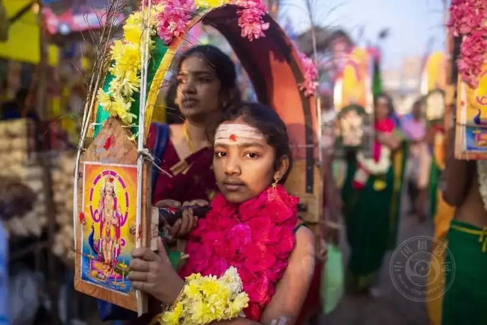
©Akilan Thyagarajan
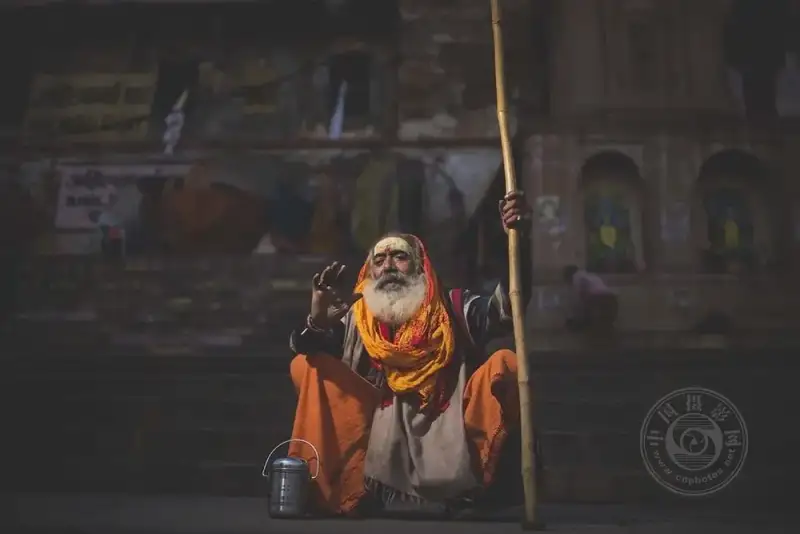
©Akilan Thyagarajan
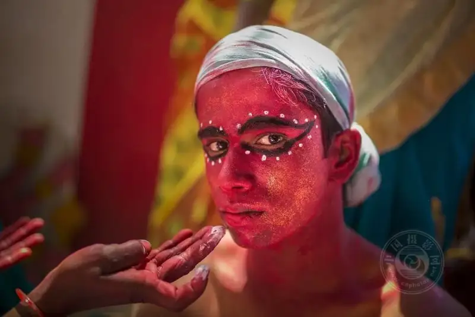
©Akilan Thyagarajan
Third, do not fear shooting too much environment.
Many people have a habit when shooting portraits. The background must be blurred so far that even the person's mother could not tell where it was shot.
The environmental portrait reverses this.You must let the environment steal a little of the frame..
Let the viewer see the salted fish drying at the door, the certificates on the wall, the near-dead pothos on the windowsill, the chicks running on the ground. Place these beside the person, and the story emerges on its own.
Do not fear a cluttered or messy frame. Life is not tidy by nature. The texture of an environmental portrait hides in these small, seemingly trivial details.
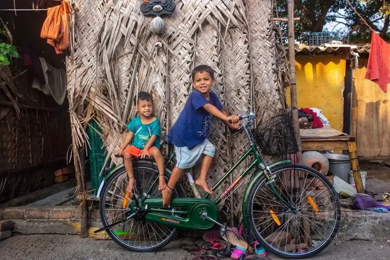
©Akilan Thyagarajan
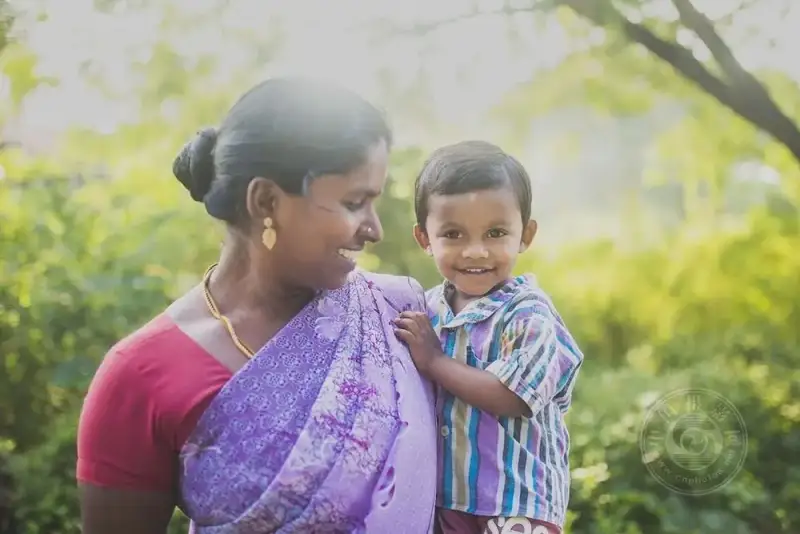
©Akilan Thyagarajan
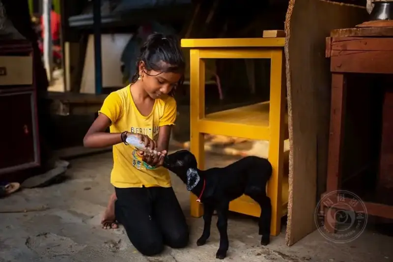
©Akilan Thyagarajan
Fourth, what do you want the viewer to see in this photo?
It comes down to one line.Let the viewer, at a glance, imagine most of this person's life..
The viewer should feel this:
Oh, he lives in this kind of place, so he dresses this way;
He faces this weather every day, so his face holds an unspoken toughness;
Those things pile up at his door, so he probably does this line of work;
These people are around him, so he does not live alone.
If a portrait makes a viewer stare for a long time and quietly think, so this is the kind of person, then congratulations. You have shot a true environmental portrait.
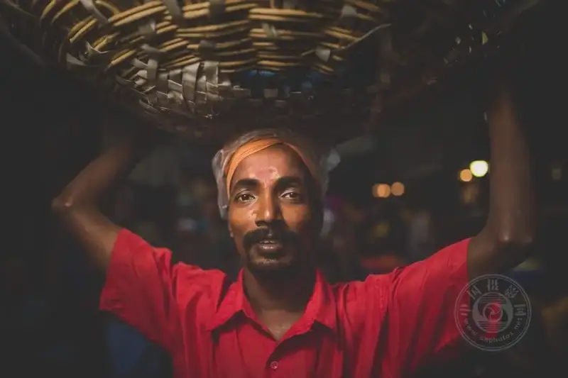
©Akilan Thyagarajan
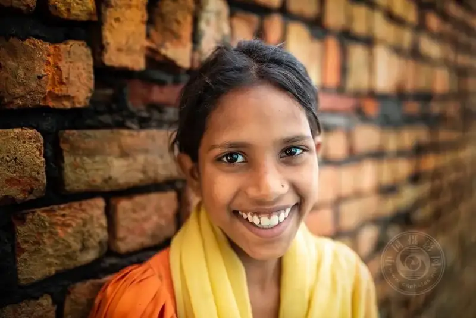
©Akilan Thyagarajan
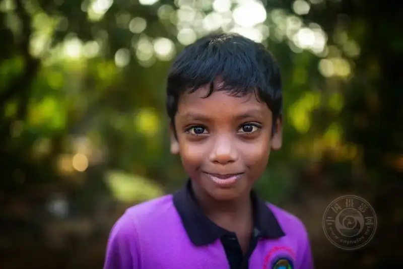
©Akilan Thyagarajan
A few last words
An environmental portrait is not a deep art form. It is a way of thinking about shooting.
Do not stare only at the face. Look more at what lies beyond the face.
The next time you raise the camera to a person, step back two paces. Frame in the crooked bamboo chair at the door, the old pasted newspapers on the wall, and the lazy cat lying on the ground.
You will find that the person in the photo suddenly comes alive.